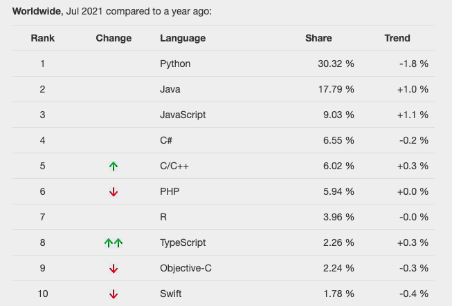
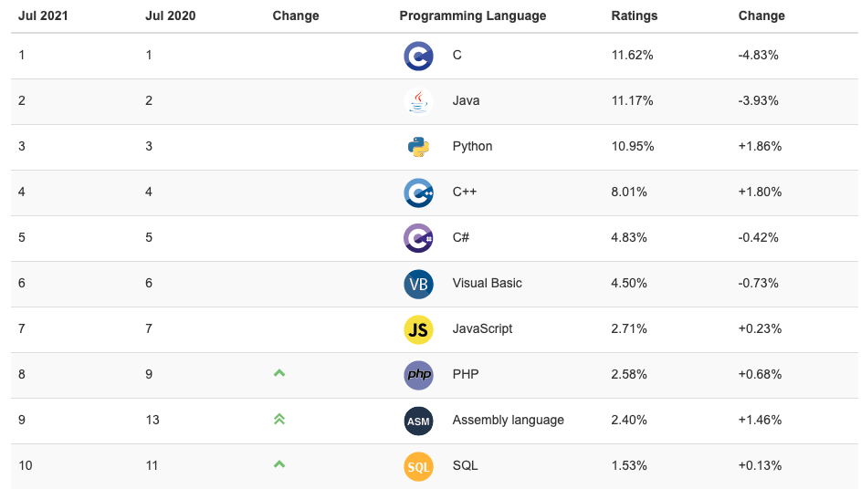

Các bạn đang bắt đầu học ngôn ngữ lập trình C có bao giờ tự hỏi các câu hỏi này không?
- Ngôn ngữ C là gì vậy?
- Đặc trưng của C thế nào, cách dùng sao vậy?
Khi mới bắt đầu tìm hiểu về C thì có lẽ ai trong chúng ta cũng muốn biết nhiều và nhiều hơn về ngôn ngữ này. Tuy nhiên càng tìm hiểu bao nhiêu thì có lẽ đống từ vựng chuyên ngành quá nhiều với quá nhiều khái niệm được lý giải khó hiểu sẽ khiến bạn cứ dậm chân mãi mà không tiến lên được.
Để giúp các bạn mới bắt đầu học về ngôn ngữ C có cái nhìn rõ ràng hơn về ngôn ngữ lập trình C là gì, đặc thù của C cũng như thị trường của ngôn ngữ này mà bài viết bạn đang đọc cũng như các bài viết khác trong chuyên đề Lập trình C/C++ cơ bản dành cho người mới học lập trình đã ra đời. Hãy tham khảo trong quá trình học lập trình của bạn nhé.
Ngôn ngữ lập trình C là gì
Khái niệm
Ngôn ngữ lập trình C là một trong những ngôn ngữ phổ biến và được nhiều người biết đến và sử dụng nhiều nhất. Tại thời điểm Kiyoshi viết bài này (21-08-01) thì ngôn ngữ C đang đứng thứ 5 trên bảng xếp hạng các ngôn ngữ lập trình được yêu thích trên toàn thế giới.

Nguồn: PYPL
Theo tài liệu tiếng Nhật tại Binary thì:
Ngôn ngữ lập trình C là một loại ngôn ngữ biên dịch (tiếng Anh: compiled language) được phát triển vào năm 1972 tại phòng thí nghiệm Bell của tập đoàn AT&T, do Brian W. Kernighan và Dennis Ritchie phát triển.
Ngôn ngữ C thuộc ngôn ngữ bậc cao mà con người có thể dễ dàng hiểu được nội dung mô tả trong nó, do đó chúng ta cần phải biên dịch ngôn ngữ này sang ngôn ngữ mà máy tính có thể hiểu khi chạy chương trình. Mã chương trình được tạo ra sau khi biên dịch từ mã nguồn của C được cho là nhỏ gọn và có hiệu suất xử lý tốt.
Có thể hiểu đơn giản, ngôn ngữ C được thiết kế giống với cách con người nói và suy nghĩ, nhưng thứ con người nói thì máy tính lại không hiểu được. Do đó sau khi viết chương trình C, để có thể chạy được chương trình này, chúng ta cần một hành động gọi là compile hay còn gọi là thông dịch, nhằm biên dịch mã nguồn của C thành dạng mã mà máy tính có thể hiểu và thực thi nó trong chương trình.
Và máy biên dịch sử dụng ở trên được gọi là trình biên dịch, và Kiyoshi đã có bài phân tích cụ thể về trình biên dịch tại bài viết sau:
- Xem thêm: Biên dịch chương trình trong C
Lịch sử
Ngôn ngữ C đã được phát triển từ những năm 1972, và có thể nói trong các ngôn ngữ đang được sử dụng hiện nay thì nó có thể được xếp vào hàng ông tổ ông cụ của các ngôn ngữ lập trình rồi.
Ngôn ngữ C có lịch sử phát triển lâu đời, tuy nhiên xuyên suốt lịch sử của nó thì nó chưa bao giờ mất đi độ hot của mình. Ngôn ngữ C được sử dụng trong hầu hết các hệ thông máy tính, và do nó được thiết kết theo kiểu để máy tính có thể hiểu, nên nó có đặc điểm nổi bật là rất nhẹ và tốc độ xử lý vô cùng nhanh.
Ngôn ngữ C chiếm bao nhiêu thị trường thế giới

Nguồn: TIOBE Index
Bảng trên là Ranking của các ngôn ngữ trong thị trường thế giới (TIOBE Index) được TIOBE Software phát triển. Ranking này dựa vào kết quả tìm kiếm trên các công cụ tìm kiếm như Google, Yahoo, và thể hiện độ quan tâm và sử dụng của người dùng trên toàn thế giới đối với các ngôn ngữ lập trình.
Và bạn có thể thấy tại thời điểm Kiyoshi viết bài này (21-08-01) thì ngôn ngữ C đang đứng đầu top TIOBE Index Ranking đấy. Cũng dễ hiểu vì với lịch sử lâu đời, thiết kế phù hợp với máy tính, việc C vẫn đang được yêu thích và sử dụng là điều khỏi phải bàn cãi.
Ưu điểm và đặc trưng của ngôn ngữ lập trình C
Ngôn ngữ lập trình C được thiết kế sao cho máy tính có thể dễ hiểu nhất, do đó nó yêu cầu phải chú ý tới các thành phần của máy tính như [CPU] hay là [memory] chẳng hạn. Do đó trong quá trình học C thì bạn cũng sẽ được nắm bắt luôn cấu trúc máy tính cũng như là cách máy tính hoạt động. Đây là ưu điểm cực lớn mà không phải tất cả các ngôn ngữ lập trình có thể mang đến cho bạn.
Vì ngôn ngữ C thường được sử dụng để viết ra các Hệ điều hành (OS) như Windows, Linux chẳng hạn, nên C cũng sẽ được sử dụng rộng rãi trong các lĩnh vực liên quan như phần cứng, phần mềm hay cả là Iot chẳng hạn. Nói không ngoa thì nếu bạn nắm vững và master được ngôn ngữ C thì bạn sẽ hiểu được OS cũng như cấu trúc trong nó, và do đó bạn cũng sẽ có khả năng chế tạo được tất cả mọi thứ liên quan tới máy tính.
Một ưu điểm khác của ngôn ngữ C đó là, do C được thiết kết theo kiểu để máy tính có thể hiểu, nên nó có đặc điểm nổi bật là rất nhẹ và tốc độ xử lý vô cùng nhanh, nhất là trong các xử lý liên quan tới tính toán với số.
Tuy nhiên thì ngôn ngữ C cũng có những nhược điểm của riêng nó. Việc sử dụng terminal command để nhập các lệnh sẽ giúp chương trình xử lý nhanh hơn, tuy nhiên cũng sẽ khiến việc chế tạo ra Graohic User Interface（GUI) trở nên khó khăn hơn. Để tạo ra các chương trình liên quan tới GUI thì chúng ta nên chọn các ngôn ngữ khác như là C++ hoặc C# thì sẽ tốt hơn.
Cũng thật may mắn vì chúng ta có thể sử dụng C++ và C cùng lúc, nên nhược điểm này cũng có thể khắc phục dễ dàng.
Ngôn ngữ lập trình C được sử dụng làm gì
C là ngôn ngữ lập trình thông dụng được sử dụng rộng rãi trong phát triển OS lẫn các ứng dụng. Sử dụng ngôn ngữ C, chúng ta có thể hầu như tạo ra được mọi thứ như ứng dụng web, ứng dụng smartphone, robot lẫn các hệ điều hành.
Chúng ta có thể kể đến 2 lĩnh vực chính ứng dụng ngôn ngữ C đó là robot/lập trình nhúng và chế tạo OS/phần mềm.
Robot/lập trình nhúng ở đây bao gồm các lĩnh vực như công nghệ điện tử, thiết bị điện tử và thiết bị gia dụng. Với C, bạn có thể tạo ra các phần mềm để điều khiển các thiết bị này.
Tuy nhiên, do việc phát triển ứng dụng bằng C tốn rất nhiều thời gian và tiền bạc, nên việc sử dụng C trong phát triển phần mềm và ứng dụng phần nhiều có sự hạn chế. Với ưu thế nhỏ gọn và tốc độ xử lý nhanh của mình, ngôn ngữ lập trình C thường được lựa chọn để phát triển các hệ thống quản lý nhân sự, chế ngự và điều khiển máy, cũng như được ứng dụng một phần trong phát triển ứng dụng web.
Học C có khó không, có nên học C không
Trong ngôn ngữ lập trình C có hầu hết các kiến thức cơ bản và nền tảng của lập trình, và bạn có thể nắm vững được chúng sau khi thành thạo C, cũng như tạo ra kiến thức nền tảng lập trình cho bản thân để có thể tiếp thu các ngôn ngữ lập trình khác một cách dễ dàng.
Tuy nhiên, cũng trong C chứa hầu hết các kiến thức nền tảng, nên với số lượng kiến thức, từ vựng liên quan đồ sộ, thì việc học lập trình C cho người mới bắt đầu học lập trình quả thực là không dễ chút nào.
Nếu bạn đang tự học lập trình và phân vân nên chọn ngôn ngữ lập trình nào để học, hoặc là một người rẽ trái ngành và muốn học nhanh chóng một ngôn ngữ lập trình để có thể ứng dụng ngay trong công việc, thì Kiyoshi khuyên bạn hãy chọn các loại ngôn ngữ dễ học và được ưa chuộng hơn như là Python hay JavaScript chẳng hạn. Và Kiyoshi cũng đã chuẩn bị 2 chuyên đề là Python cơ bản - lập trình python cho người mới bắt đầu và Học javascript - lập trình javascript cơ bản cho bạn.
- Xem thêm: Python cơ bản - lập trình python cho người mới bắt đầu
- Xem thêm: Học javascript - lập trình javascript cơ bản
Nếu bạn là học sinh hay sinh viên có thầy cô hướng dẫn, hoặc là người muốn bắt đầu học lập trình từ các kiến thức nền tảng, để sau đó học thêm các ngôn ngữ lập trình khác, thì Kiyoshi khuyên bạn hãy bắt đầu việc học lập trình từ ngôn ngữ C. Sau khi master ngôn ngữ này, bạn có thừa nền tảng để có thể chinh phục tiếp các ngôn ngữ lập trình tiếp theo.
Và Kiyoshi cùng trang web Lập trình căn bản. com với sứ mệnh mang những kiến thức lập trình chắt lọc từ Nhật Bản về Việt Nam cũng sẽ là nguồn tham khảo hữu ích cho bạn khi bạn chọn C làm ngôn ngữ lập trình đầu tiên của mình.
Tổng kết
Trên đây Kiyoshi đã hướng dẫn bạn về ngôn ngữ lập trình C cũng như đặc thù của ngôn ngữ này rồi. Để nắm rõ nội dung bài học hơn, bạn hãy ôn lại các kiến thức của của ngày hôm nay nhé.
Và hãy theo dõi chuyên đề Lập trình C cơ bản dành cho người mới học lập trình trong các bài viết tiếp theo.
URL Link
https://laptrinhcanban.com/c/lap-trinh-c-co-ban/gioi-thieu-ngon-ngu-c/ngon-ngu-lap-trinh-c-la-gi/
HOME › lập trình c cơ bản dành cho người mới học lập trình>>01. giới thiệu ngôn ngữ c